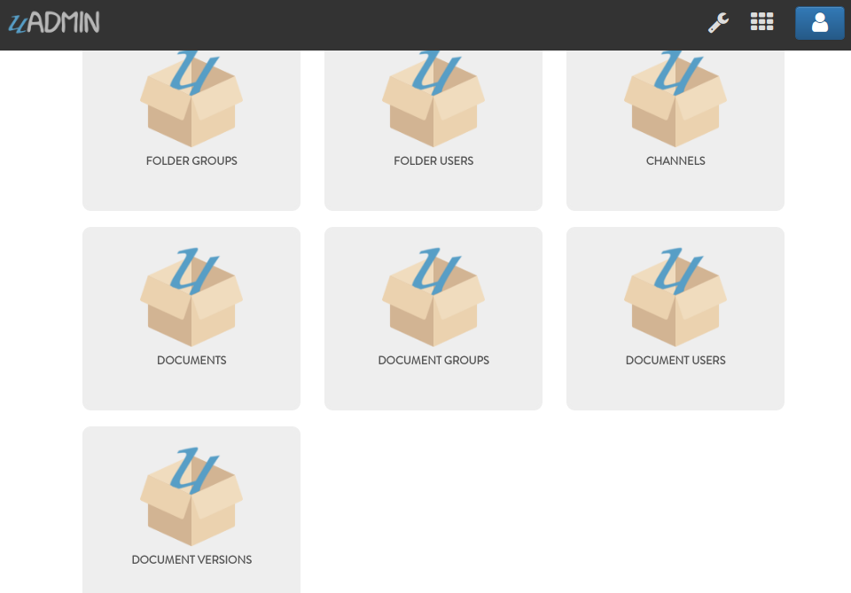

Document System Tutorial Part 5 - Linking Models (Documents)¶
In this part, we will talk about linking models using a foreign key for documents.
Let’s create a new file in the models folder named “channel.go” with the following codes below:
package models
import (
"github.com/uadmin/uadmin"
)
// Channel !
type Channel struct {
uadmin.Model
Name string `uadmin:"required"`
}
Create another file in the models folder named “document.go” with the following codes below. Link the Channel model to the Document model.
package models
import (
"time"
"github.com/uadmin/uadmin"
)
// Document !
type Document struct {
uadmin.Model
Name string
File string `uadmin:"file"`
Description string `uadmin:"html"`
RawText string `uadmin:"list_exclude"`
Folder Folder `uadmin:"filter"`
FolderID uint
CreatedDate time.Time
Channel Channel `uadmin:"list_exclude"`
ChannelID uint
CreatedBy string
}
file tag allows the user to upload a file from your computer.
html tag allows the user to modify text in HTML format.
list_exclude tag hides the field or column name in the model structure.
filter tag adds a field in the uAdmin filter feature to search based on the related field.
CreatedBy field is a reserved word in uAdmin used to display the name of the user who created the record in the model.
And of course, let’s create permissions to the group and user who can access the specific document.
document_group.go
package models
import (
"github.com/uadmin/uadmin"
)
// DocumentGroup !
type DocumentGroup struct {
uadmin.Model
Group uadmin.UserGroup
GroupID uint
Document Document
DocumentID uint
Read bool
Add bool
Edit bool
Delete bool
}
// DocumentGroup function that returns string value
func (d *DocumentGroup) String() string {
// Gives access to the fields in another model
uadmin.Preload(d)
// Returns the GroupName from the Group model
return d.Group.GroupName
}
document_user.go
package models
import (
"github.com/uadmin/uadmin"
)
// DocumentUser !
type DocumentUser struct {
uadmin.Model
User uadmin.User
UserID uint
Document Document
DocumentID uint
Read bool
Add bool
Edit bool
Delete bool
}
// DocumentUser function that returns string value
func (d *DocumentUser) String() string {
// Gives access to the fields in another model
uadmin.Preload(d)
// Returns the full name from the User model
return d.User.String()
}
What if the user updates something in the document then reuploads it? In this situation, let’s create a file named “document_version.go”. Every updates done by the user, the version number of the document will change.
package models
import (
"fmt"
"time"
"github.com/uadmin/uadmin"
)
// DocumentVersion !
type DocumentVersion struct {
uadmin.Model
Document Document
DocumentID uint
File string `uadmin:"file"`
Number int `uadmin:"help:version number"`
Date time.Time
}
// Returns the version number
func (d DocumentVersion) String() string {
return fmt.Sprint(d.Number)
}
help tag notifies the user to give solutions to advanced tasks.
Now go to main.go and register the models that we have created.
func main() {
// Register models to uAdmin
uadmin.Register(
models.Folder{},
models.FolderGroup{},
models.FolderUser{},
models.Channel{}, // place it here
models.Document{}, // place it here
models.DocumentGroup{}, // place it here
models.DocumentUser{}, // place it here
models.DocumentVersion{}, // place it here
)
// Some codes
}
Run your application. As expected, Channels and Document related models are added in the uAdmin Dashboard.
In the next part, we will discuss about document concepts and how to create records in an application.